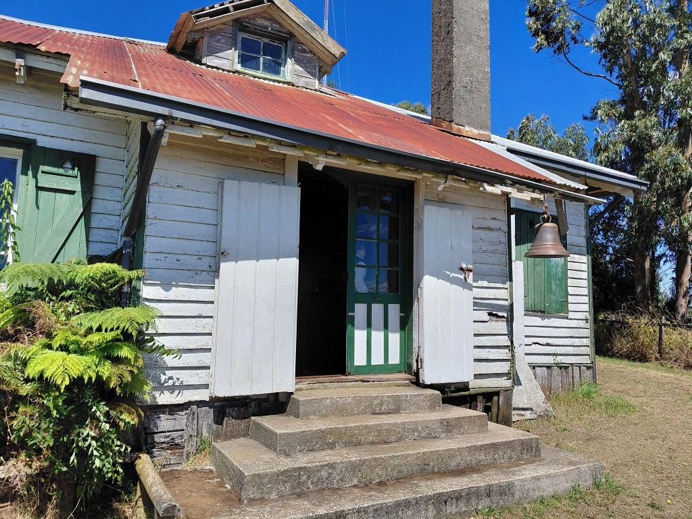

Nosotros
Rescatamos la memoria campesina del Valle de Loncopán.
El museo está en la Casona Loncopán, antigua escuela del sector. Es gestionado por la Oficina de Patrimonio Turístico y Cultural de la Ilustre Municipalidad de Futrono.
Recintos de madera con objetos donados por familias del valle: cocinas de leña, arados, tarros de leche, fotografías y herramientas del día a día campesino.
Explorar la colección